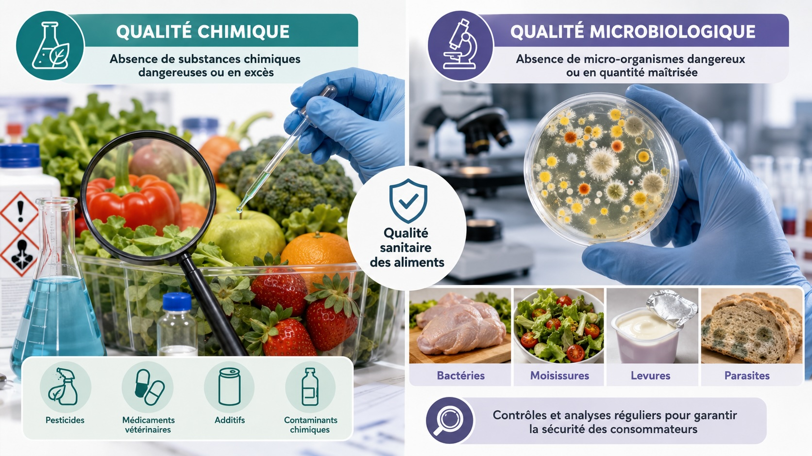
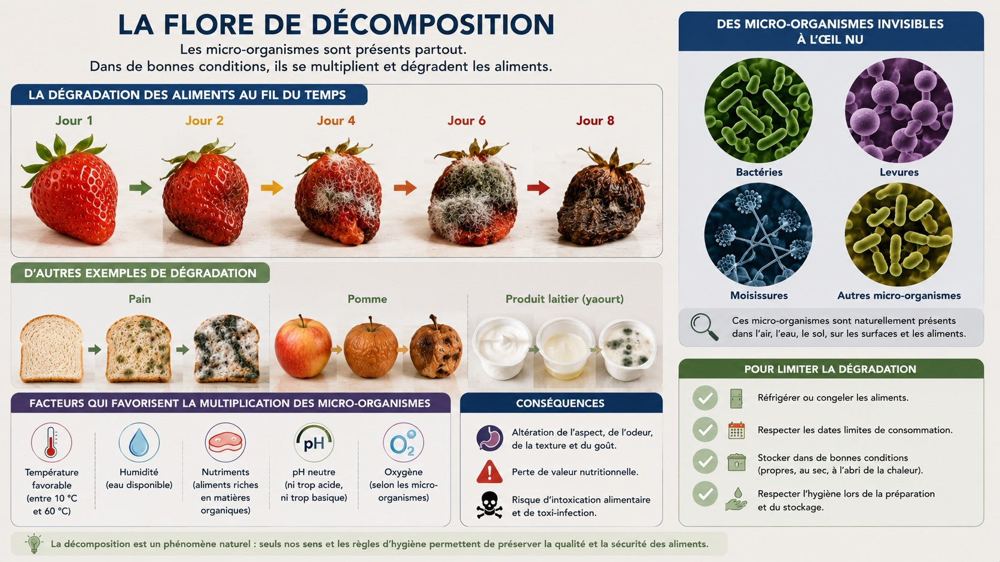
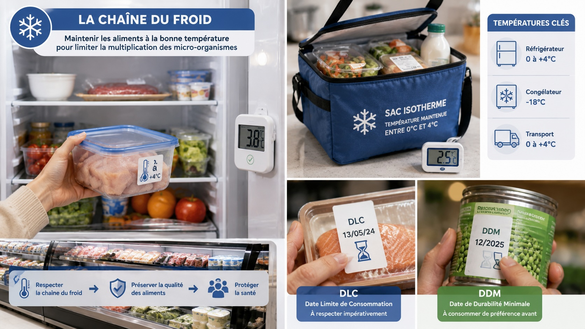
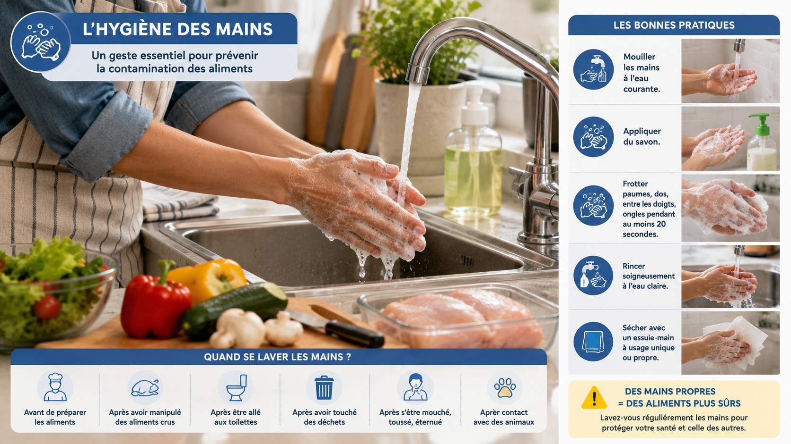
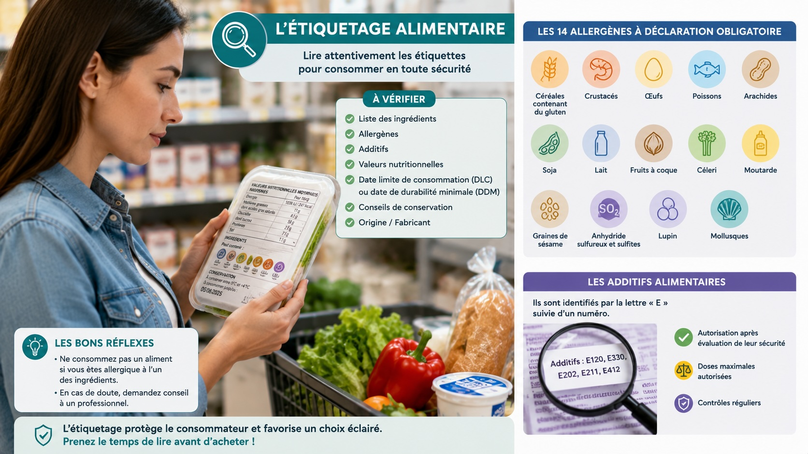
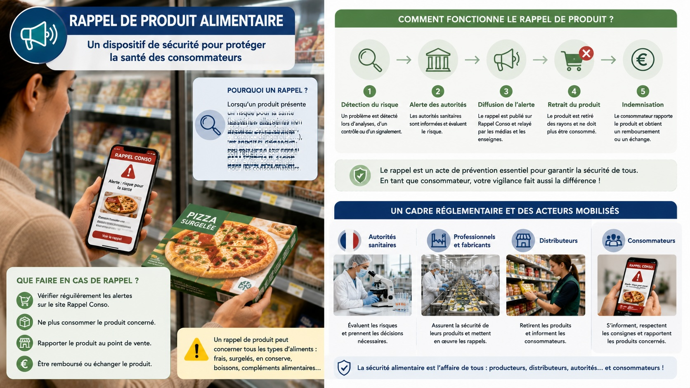

La qualité sanitaire d'un aliment repose sur deux grands critères :
La qualité chimique : absence ou présence en quantité acceptable de substances chimiques indésirables (pesticides, résidus de médicaments vétérinaires, additifs, contaminants chimiques, métaux lourds).
La qualité microbiologique : absence ou présence en quantité contrôlée de micro-organismes indésirables (bactéries, virus, moisissures, levures, parasites) susceptibles de provoquer des intoxications alimentaires.
On parle d'agent contaminant pour désigner toute substance ou organisme étranger à l'aliment et pouvant nuire à la santé du consommateur.
Agents à classer : pesticides · bactéries · moisissures · résidus de médicaments vétérinaires · parasites · métaux lourds.
| Qualité chimique | |
| Qualité microbiologique |

Les aliments contiennent naturellement des micro-organismes (la flore de décomposition) qui peuvent se multiplier rapidement dans certaines conditions favorables :
La matière organique : les micro-organismes se nourrissent des nutriments présents dans l'aliment.
La chaleur : entre +10 °C et +63 °C, les bactéries se multiplient très vite : c'est la zone de danger.
L'humidité : l'eau est indispensable à la vie microbienne.
L'oxygène : certaines bactéries ont besoin d'oxygène pour se développer.
Le temps : une seule bactérie peut donner plus d'un million de bactéries en quelques heures à température ambiante.

La chaîne du froid désigne le maintien d'une température basse (en général entre 0 et +4 °C pour les produits frais, et −18 °C pour les produits surgelés) tout au long du parcours de l'aliment : de la production à la consommation.
Tout rupture de la chaîne du froid (aliment laissé à température ambiante, congélateur défectueux) peut entraîner une multiplication rapide des micro-organismes, même si l'aliment est ensuite remis au frais.
La Date Limite de Consommation (DLC), indiquée par la mention « À consommer jusqu'au… », fixe la date au-delà de laquelle l'aliment ne doit plus être consommé car il peut présenter un risque sanitaire. Elle concerne les produits périssables (viande, poisson, produits laitiers).
| Chaîne du froid | |
| DLC |

Les mains sont l'un des principaux vecteurs de contamination des aliments. Elles peuvent transporter des bactéries après avoir touché de la viande crue, des œufs, des surfaces non lavées, ou simplement après être passées aux toilettes ou s'être mouché.
Un lavage des mains efficace dure au moins 30 secondes, à l'eau et au savon, en frottant : paumes, dos des mains, entre les doigts, sous les ongles, poignets. Il doit être réalisé :
— avant de cuisiner ou de manger,
— après avoir manipulé des aliments crus,
— après être passé aux toilettes,
— après avoir touché un déchet ou un animal.

Un allergène est une substance qui, chez certaines personnes, peut déclencher une réaction immunitaire anormale : c'est l'allergie alimentaire. Les manifestations vont de l'urticaire à des réactions graves comme le choc anaphylactique, qui peut être mortel.
La réglementation européenne (règlement INCO de 2014) impose la mention obligatoire de 14 allergènes sur l'étiquette de tout produit alimentaire emballé :
Gluten · Crustacés · Œufs · Poisson · Arachide · Soja · Lait · Fruits à coque · Céleri · Moutarde · Sésame · Sulfites · Lupin · Mollusques.
Ces allergènes doivent être mis en évidence dans la liste des ingrédients (gras, majuscules ou couleur).
Un additif alimentaire est une substance ajoutée pour conserver, colorer, texturer ou aromatiser un aliment. Il porte un code (lettre E suivie d'un numéro : E330 = acide citrique).
| Allergène | |
| Additif |
La sécurité alimentaire en France est garantie par un système de contrôle assuré par plusieurs organismes :
— La DGCCRF (Direction générale de la concurrence, de la consommation et de la répression des fraudes) contrôle les produits mis sur le marché et lutte contre les tromperies.
— La DGAL (Direction générale de l'alimentation) surveille la sécurité sanitaire des aliments à toutes les étapes de la chaîne.
— L'ANSES (Agence nationale de sécurité sanitaire) évalue les risques et émet des avis scientifiques.
Le principe de précaution permet, en cas de risque potentiel grave mais incertain, de prendre des mesures préventives (retrait du marché, interdiction temporaire) sans attendre la certitude scientifique. C'est ce principe qui justifie les rappels de produits.
| DGCCRF | |
| DGAL | |
| ANSES |
Lorsqu'un risque sanitaire est identifié sur un produit déjà mis en vente (présence de bactéries, contamination chimique, allergène non déclaré), un rappel est déclenché.
L'alerte est diffusée par :
— le site officiel RappelConso.gouv.fr,
— les affichages en magasin,
— les médias et réseaux sociaux,
— les communications du producteur.
Le consommateur est invité à cesser immédiatement la consommation du produit et à le rapporter au point de vente pour remboursement ou destruction.

Un rappel produit suit plusieurs étapes :
1. Détection du risque — par un contrôle, une analyse, un signalement de consommateur ou d'un professionnel.
2. Notification aux autorités — DGCCRF, DGAL.
3. Diffusion de l'alerte — via RappelConso.gouv.fr et tous les canaux.
4. Retrait des rayons — les magasins retirent immédiatement le produit.
5. Information du consommateur — affiche en magasin, communication.
6. Restitution et remboursement — le consommateur rapporte le produit, qui est détruit ou retraité.
À conserver et à relire avant l'évaluation
Continuer à s'entraîner sur mapse.fr :